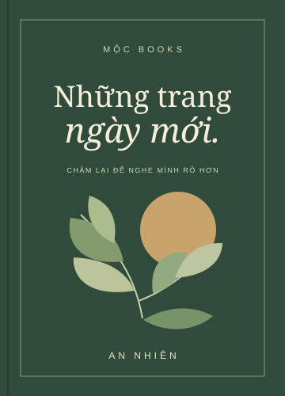

Gần gũi & dễ đọc
Những câu chuyện ngắn, ngôn từ giản dị. Bạn có thể bắt đầu từ bất kỳ chương nào mình thấy đồng cảm.
12 chương độc lậpMỘT CUỐN SÁCH, MỘT KHỞI ĐẦU
Chậm lại một chút.
Để nghe mình rõ hơn.
Một hành trình nhẹ nhàng qua những điều bình dị — giúp bạn tìm lại sự cân bằng, nuôi dưỡng thói quen tốt và đón mỗi ngày bằng một tâm thế mới.

02 — BÊN TRONG CUỐN SÁCH
Không cần đọc vội. Mỗi chương là một lời mời để dừng lại và thử một điều mới.
Những câu chuyện ngắn, ngôn từ giản dị. Bạn có thể bắt đầu từ bất kỳ chương nào mình thấy đồng cảm.
12 chương độc lậpMỗi chương kết thúc bằng một gợi ý nhỏ: viết vài dòng, thử một thói quen, hoặc dành thời gian cho điều mình yêu.
Bài tập tự suy ngẫmSách giấy cho những buổi chiều yên tĩnh. Bản điện tử cho những lúc bạn muốn mang theo cả một khoảng bình yên.
Giấy · PDF · EPUB03 — CHỌN PHIÊN BẢN CỦA BẠN
Giá và các phiên bản dưới đây là nội dung minh họa.
01 / BẢN ĐIỆN TỬ
79.000đ
02 / BẢN BÌA MỀM
129.000đ
03 / BỘ ĐỒNG HÀNH
169.000đ
04 — BẮT ĐẦU TỪ MỘT TRANG
Tải chương đọc thử “Buổi sáng dành cho mình”. Không cần đăng ký — chỉ cần dành một chút thời gian cho bạn.
05 — READER’S SAY
Một vài cảm nhận minh họa cho hành trình cùng cuốn sách.
“Một cuốn sách để mình đọc chậm. Sau mỗi chương, mình muốn đặt điện thoại xuống và dành thêm thời gian cho những điều nhỏ xung quanh.”
“Mình thích những bài tập cuối chương. Không quá lớn lao, nhưng đủ để bắt đầu một thói quen tốt và hiểu bản thân thêm một chút.”
“Giọng văn nhẹ nhàng như một cuộc trò chuyện. Có những đoạn mình đánh dấu lại, để một hôm mệt mỏi có thể mở ra đọc thêm lần nữa.”